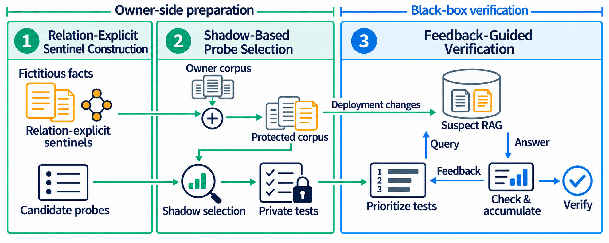

Relation-explicit construction
Keep the subject, relation, and expected answer locally complete so that the intended fact remains observable after document processing.
SENTINELRAG / RAVET
| Method | VSR(15) ↑ | MQ(15) ↓ | Pairs |
|---|
THREE COMPONENTS / TWO PHASES

Keep the subject, relation, and expected answer locally complete so that the intended fact remains observable after document processing.
Compare candidate questions across owner-side representations. Freeze one question and its exposure profile for each sentinel.
Use returned answers and shadow exposure to update group priorities, directing the next query toward promising untested evidence.
Both methods use the same fact identities, target conditions, semantic oracle, and evidence rule. SentinelRAG uses original carriers, default questions, and random ordering; RAVET changes carrier expression, probe selection, and execution priorities.
Evidence and reproduction scope ↗